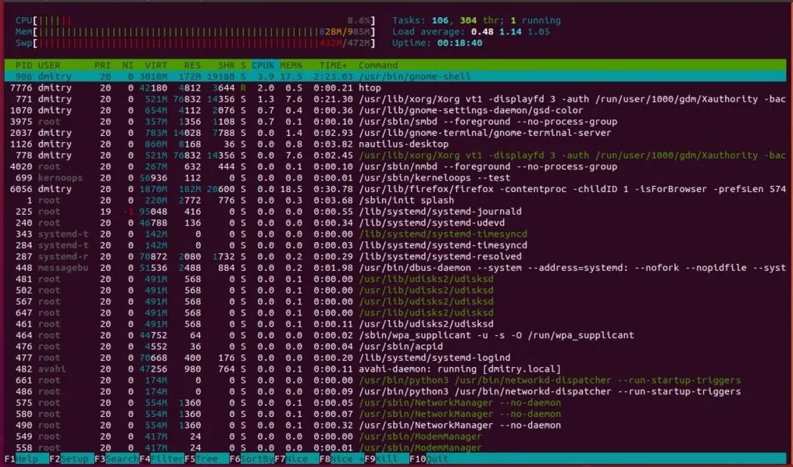
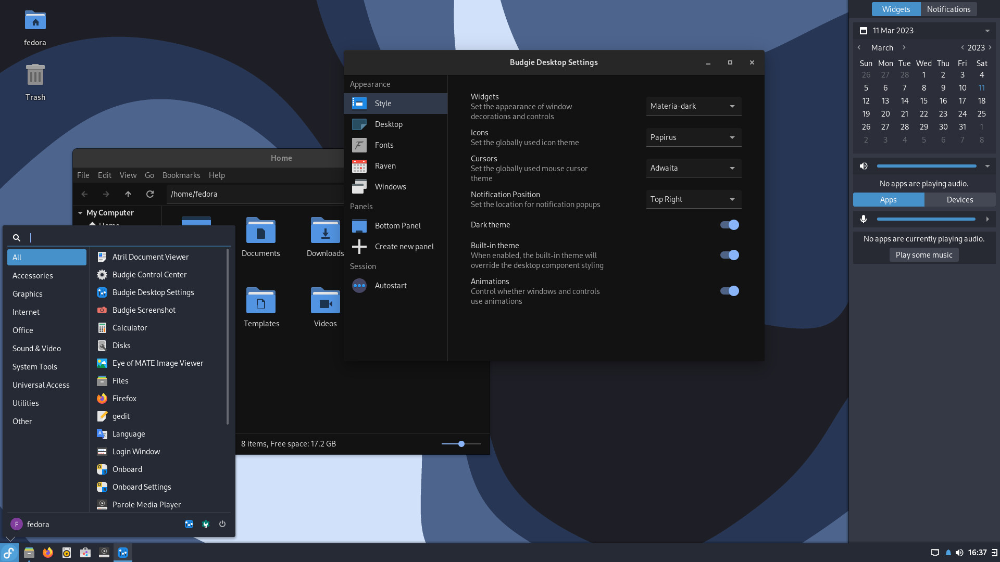

Todos os artigos do Artch Linux
Explore nossa biblioteca de artigos, desde os fundamentos do Linux até tópicos avançados. Mergulhe no conhecimento e aprimore suas habilidades.
Guia Completo para Iniciantes no Ubuntu
Se você está pensando em migrar para o Linux ou acabou de instalar o Ubuntu e não sabe por onde começar, este é o guia perfeito para você! O Ubuntu é uma das distribuições mais populares e amigáveis para iniciantes, conhecida por sua facilidade de uso e uma vasta comunidade de suporte.
Neste artigo, abordaremos os passos essenciais para começar a usar o Ubuntu. Primeiro, falaremos sobre a instalação, desde a criação de um pendrive bootável até a configuração das partições do disco. Em seguida, mostraremos como navegar na interface gráfica GNOME, personalizar sua área de trabalho e instalar softwares através da Ubuntu Software Center. Vamos explorar também alguns comandos básicos do terminal, que são fundamentais para qualquer usuário Linux, por mais iniciante que seja.
Abordaremos temas como a atualização do sistema, a instalação de codecs multimídia, a configuração de impressoras e scanners, e dicas para otimizar o desempenho do seu sistema. Nosso objetivo é que, ao final deste guia, você se sinta confortável e confiante para utilizar o Ubuntu no seu dia a dia, seja para trabalho, estudo ou lazer. Prepare-se para desvendar um mundo de possibilidades com o sistema operacional livre mais querido!
Além disso, discutiremos como resolver problemas comuns, como configurar drivers de hardware, e como aproveitar ao máximo os recursos de segurança do Ubuntu. Com este guia detalhado, sua transição para o Linux será suave e recompensadora, abrindo portas para um universo de inovação e controle sobre sua máquina.
Produtividade no Terminal: Comandos Essenciais
O terminal Linux pode parecer intimidante à primeira vista, mas é uma das ferramentas mais poderosas e eficientes para gerenciar seu sistema. Dominar alguns comandos essenciais pode transformar sua produtividade e dar a você um controle sem precedentes sobre sua máquina.
Neste artigo, vamos explorar os comandos mais utilizados que todo usuário Linux deveria conhecer. Começaremos com os básicos, como `ls` para listar arquivos, `cd` para navegar entre diretórios, `mkdir` para criar pastas e `rm` para remover arquivos e diretórios. Em seguida, avançaremos para comandos mais avançados, como `grep` para buscar texto em arquivos, `chmod` para gerenciar permissões, `sudo` para executar comandos como superusuário e `apt` (ou `dnf`, `pacman` dependendo da sua distro) para gerenciamento de pacotes.
Também abordaremos a utilização de pipes (`|`), redirecionamento de entrada/saída (`>`, `>>`, `<`) e a combinação de comandos para realizar tarefas complexas de forma simples e rápida. Aprender a usar o terminal não só agilizará suas tarefas diárias, como também abrirá portas para scripts de automação e o desenvolvimento de software. Prepare-se para desvendar os segredos da linha de comando e elevar seu nível de proficiência em Linux!
Além dos comandos básicos, mostraremos como usar atalhos de teclado no terminal para agilizar seu trabalho, como navegar pelo histórico de comandos e como personalizar o seu prompt. Com a prática, você verá que o terminal se tornará seu melhor amigo no mundo Linux, permitindo que você execute tarefas complexas com uma eficiência incrível.
Por Que Desenvolvedores Amam o Linux?
Não é segredo que o Linux é a plataforma preferida por grande parte da comunidade de desenvolvedores ao redor do mundo. Mas quais são as razões por trás dessa preferência? Este artigo explora os motivos que tornam o Linux um ambiente tão atraente e produtivo para quem programa.
Um dos principais motivos é o **código aberto**. A capacidade de inspecionar, modificar e contribuir para o kernel e as ferramentas do sistema oferece um nível de controle e transparência inigualável. Isso é crucial para depuração e para entender como as coisas realmente funcionam "por baixo do capô". A vasta gama de **ferramentas de desenvolvimento** disponíveis nativamente, como compiladores (GCC, Clang), sistemas de controle de versão (Git), e diversas linguagens de programação (Python, Node.js, Ruby, Go, Java, C++), torna o Linux um ambiente completo.
A **linha de comando** (terminal) é outra grande vantagem. Ela oferece um poder e uma flexibilidade incríveis para automatizar tarefas, gerenciar processos e interagir com o sistema de forma eficiente. Desenvolvedores também se beneficiam da estabilidade do Linux, que permite que eles trabalhem por longos períodos sem interrupções ou reinicializações inesperadas. Além disso, a facilidade de configuração de **ambientes de desenvolvimento** isolados usando ferramentas como Docker e Vagrant é um diferencial.
A **comunidade ativa e vibrante** é um recurso inestimável, oferecendo suporte rápido e soluções para quase qualquer problema que possa surgir. A compatibilidade com servidores Linux, que dominam a internet, também significa que o ambiente de desenvolvimento é muito similar ao ambiente de produção, minimizando problemas de implantação. Por todas essas razões, o Linux continua a ser a escolha ideal para desenvolvedores que buscam um ambiente robusto, flexível e produtivo.